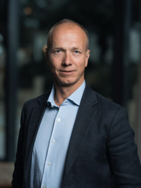
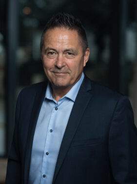
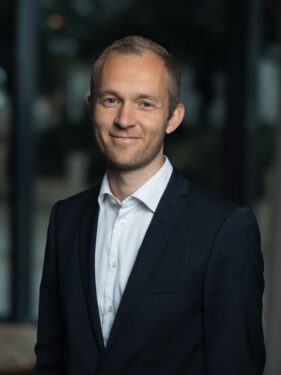
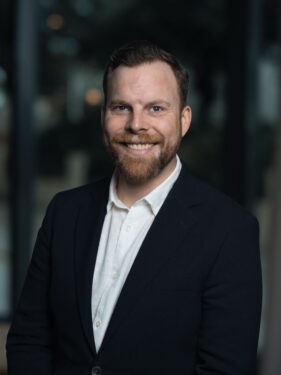
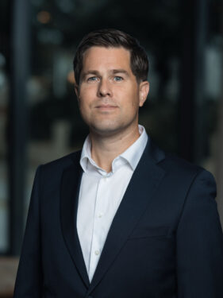
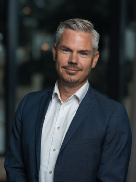

Seks erfarne rådgivere med bred kompetanse innen investering, skatt, pensjon og formuesforvaltning. Vi er dedikerte til langvarige relasjoner og personlig oppfølging – du er aldri bare et kundenummer hos oss.
Hos Kraft Finans Sandnes tror vi på kraften i teamarbeid. Selv om du har én primærrådgiver å forholde deg til, drar du nytte av hele teamets kompetanse. Vi har ukentlige møter der vi diskuterer markedsutvikling, kundesituasjoner og nye muligheter – slik at du alltid får den beste, mest oppdaterte rådgivningen.
Teamet kombinerer yngre analytisk kraft med erfaren bransjekunnskap. Noen av oss har jobbet med Rogalands næringslivstopper i over 20 år, andre bringer ny kompetanse innen digital investering og ESG. Til sammen dekker vi alle sider av privatøkonomi og bedriftsfinans på høyt nivå.

Alf Rune leder Sandnes-kontoret og har over 25 års erfaring i norsk finansbransje. Han er spesialist på helhetlig formuesplanlegging for velstående familier og Rogalands næringslivselite, og er kjent for sin evne til å se den store sammenhengen i komplekse økonomiske situasjoner. Han har vært en sentral skikkelse i bygging av Kraft Finans' sterke posisjon i regionen.

Erik har en mastergrad i finansiell økonomi fra NHH og over 15 års erfaring fra norske og internasjonale markeder. Hans spesialitet er langsiktig porteføljebygging med fokus på risikojustert avkastning. Han er dessuten en anerkjent ekspert på norske pensjonsordninger og hjelper jevnlig kunder med å maksimere pensjonsverdiene fra oljebransjen.

Fredrik er vår spesialist på bærekraftige investeringer og globale aksjemarkeder. Med bakgrunn fra internasjonale finansmiljøer i London og Oslo kombinerer han dyp forståelse for ESG-analyse med praktisk porteføljebygging. Han hjelper kunder som ønsker å investere i tråd med sine verdier uten å gå på kompromiss med avkastning.

Kristian er ekspert på skatteoptimalisering og arveplanlegging, og er vår foretrukne rådgiver for kunder i komplekse skatte- og arvesituasjoner. Med juridisk og finansiell dobbeltkompetanse hjelper han bedriftseiere med generasjonsskifte, familier med arveoppgjør og velstående enkeltpersoner med å strukturere formuen skattemessig optimalt.

Kristoffer spesialiserer seg på bedriftsrådgivning og kapitalforvaltning for selskaper i vekst. Med solid bakgrunn fra corporate finance og M&A-transaksjoner forstår han bedriftseierens perspektiv fra innsiden. Han er særlig engasjert i å hjelpe Rogalands grundermiljø med å strukturere selskapers økonomi og eierskap på en optimal måte.

Frode er en erfaren rådgiver med spesialkompetanse på Kraft Finans' egne fond og fondssparing generelt. Han er kjent for sin pedagogiske tilnærming og evne til å forklare komplekse finansielle konsepter på en forståelig måte. Frode er den foretrukne rådgiveren for kunder som er nye til investering, og hjelper dem å komme i gang med trygghet og god forståelse.
Bestill et gratis og uforpliktende første møte. Vi finner den rådgiveren i teamet som passer best til din situasjon og dine mål.